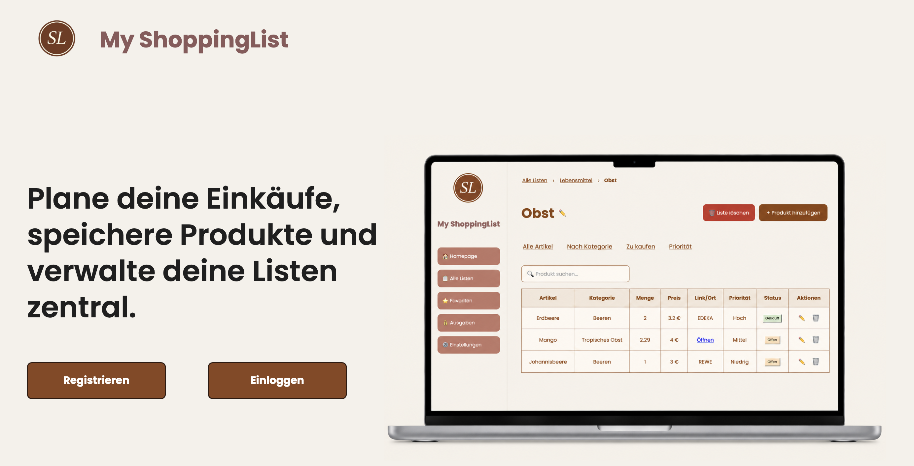

MyShoppingList
Im Rahmen eines Hochschulprojekts entstand im Team eine Full-Stack-Webanwendung zur Verwaltung von Einkaufslisten. Die Anwendung verbindet ein Vue.js-Frontend mit einem Spring-Boot-Backend und einer PostgreSQL-Datenbank. Zu den Funktionen gehören die Registrierung und Anmeldung, das Erstellen und Bearbeiten von Einkaufslisten sowie die Verwaltung von Produkten, das Favorisieren und einen Überlick über den Einkaufsstatus.
Hinweis: Die Datenbank der gehosteten Demo ist derzeit nicht aktiv. Der Quellcode ist auf GitHub verfügbar.